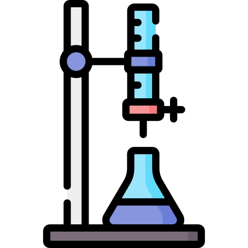

Bem-vindo aos simuladores de titulação desenvolvidos pelo Departamento de Química Analítica do IQ-UFRJ.
Escolha abaixo o tipo de titulação que deseja simular. Os simuladores permitem explorar interativamente
as curvas de titulação e aprender sobre os indicadores adequados para cada caso.

Ácido (Monoprótico) + Base Forte
Explore o comportamento do sistema contendo um ácido monoprótico (titulado) e uma base forte (titulante) alterando os parâmetros da titulação e observe como o pH varia ao longo da titulação e como as cores dos indicadores mudam de acordo com esses valores.
Explore o comportamento do sistema contendo uma base dibásica (titulado) e um ácido forte (titulante) alterando os parâmetros da titulação e observe como o pH varia ao longo da titulação e como as cores dos indicadores mudam de acordo com esses valores.
Explore a titulação de um ácido diprótico (titulado) com base forte (titulante). Observe os dois possíveis pontos de equivalência, de acordo com os seus Ka's, e como diferentes indicadores são adequados para cada um dos possíveis pontos de equivalências. Analise as mudanças de cor do indicador conforme o pH varia ao longo da curva.
Explore a titulação de uma dibase (titulado) com ácido forte (titulante). Observe os dois possíveis pontos de equivalência, de acordo com os seus Kb's, e como diferentes indicadores são adequados para cada um dos possíveis pontos de equivalências. Analise as mudanças de cor do indicador conforme o pH varia ao longo da curva.